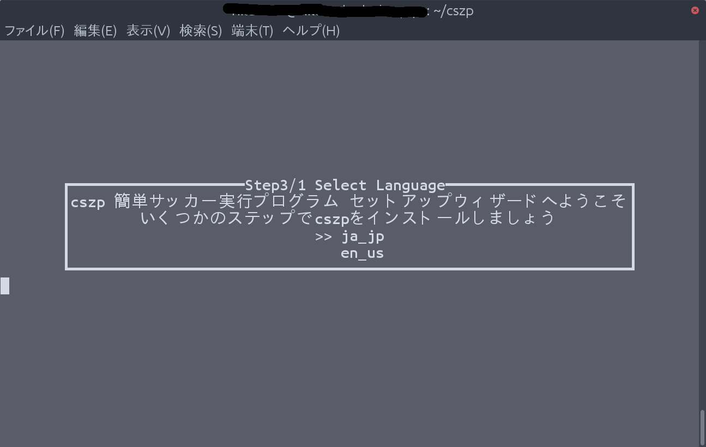
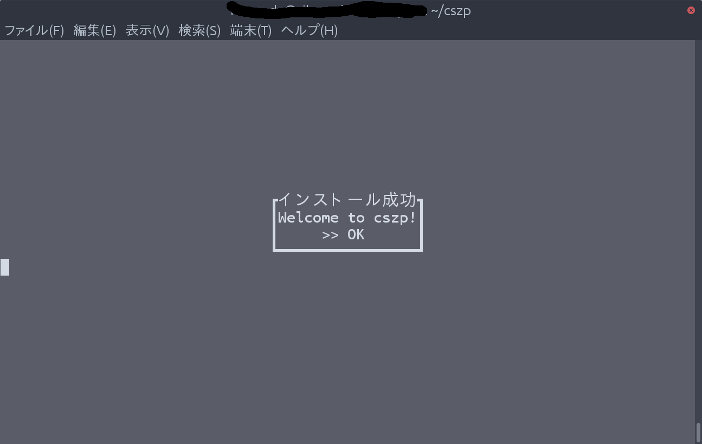

まずはインストールをしなければ始まらないのでインストールをしていきましょう。
インストール方法はとてもかんたんです。
cszpにはインストールに必要なライブラリがあります。少ないかと思いますが、インストールプログラムがあとで追加のライブラリをインストールします。
pip3 install cuitools
上のコマンドを実行してcuitoolsをインストールしてください。
今回はgitを使うので、もしgitをインストールしていなければ下のコマンドでインストールをしてください。
sudo apt install git
下のコマンドでプログラムをダウンロードします。
git clone https://github.com/kumitatepazuru/cszp.git
ダウンロードができたら、作業ディレクトリをダウンロードしたディレクトリにしてください。
最初にも言いましたがインストール方法はとてもかんたんです。下のコマンドを実行すると、下の画像のようなものが出てくるはずです。
sudo python3 install.py
これは言語設定なのでどちらかを選んでください。ちなみに僕は日本語(ja_jp)を選びました。
次はライブラリのインストールです。ここではいを選択すると、必要なライブラリがすべてインストールされます。
その次の画面はよく確認してはいを選択してください。
インストールのパスを入力して終了です。インストールが成功したら、下のような画面が出ます。そうしたら、終了です。
こんな感じでインストールは終了です。次はcszpの基本的な使い方について説明していきたいと思います。